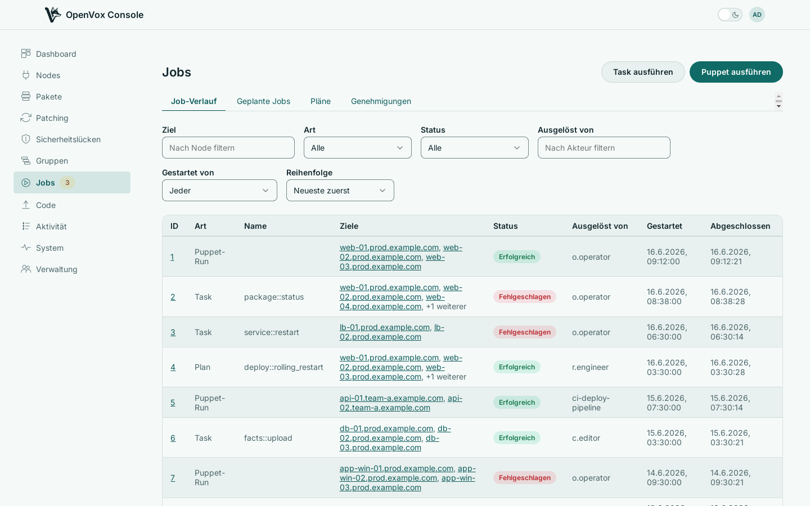

Führen Sie Puppet, Tasks und Pläne auf den Nodes Ihrer Wahl aus – jetzt oder nach Zeitplan – und sehen Sie zu, wie die Ergebnisse Node für Node zurückkommen.
Ergebnisse je Node, nicht je Job
Jedes Ziel wird einzeln festgehalten: Status, Exit-Code und Ausgabe. Ein Job, der auf neun Nodes funktioniert hat und auf einem fehlgeschlagen ist, sagt genau das, statt auf ein einziges Urteil zusammenzufallen, dem Sie dann nachgehen müssen.
Wo ein Job einen Puppet-Lauf ausgelöst hat, verweist sein Ergebnis direkt auf den Report, den dieser Lauf erzeugt hat – „was hat das tatsächlich geändert“ ist also einen Klick entfernt.


Tasks, Pläne und Zeitpläne
Führen Sie einen Task aus Ihrem deployten Code aus, wobei seine Parameter gegen die deklarierten Typen geprüft und sensible Werte aus jedem Datensatz herausgehalten werden. Verketten Sie Puppet-Läufe und Tasks zu einem Plan, den Sie aufbewahren und erneut ausführen. Oder schreiben Sie einen Plan in YAML neben Ihren Code, mit typisierten Parametern und von Schritt zu Schritt weitergegebenen Ergebnissen, und die Konsole führt ihn aus – ohne Bolt.
Speichern Sie jeden davon, um ihn später zu starten, einmal oder wiederholt. Ein Zeitplan wählt seine Nodes bei jeder Auslösung und läuft mit dem Zugriff, den sein Besitzer in diesem Moment hat, sodass ein Zeitplan aufhört zu tun, was sein Besitzer nicht mehr darf.
Ziele per Regel wählen, nicht per Liste
Nennen Sie Nodes, verweisen Sie auf eine Node-Gruppe oder schreiben Sie eine PQL-Abfrage, und die Konsole ermittelt die Nodes beim Start des Jobs. Führen Sie Puppet als No-op aus, um zu sehen, was es ändern würde, gegen ein anderes Environment oder mit Debug-Ausgabe – pro Lauf.
Hosts, die den Agenten nicht ausführen können, sind trotzdem per SSH erreichbar. Tasks laufen auf ihnen wie auf jedem Node.
Die Orchestrierung läuft über NATS, sodass das Erreichen einer großen Flotte eine Frage zusätzlicher Kapazität ist und nicht des Umbaus der Nachrichtenwege.
So geht's
Führen Sie Puppet oder einen Puppet-Task auf Abruf auf einem Node, einer Auswahl, den Nodes, auf die eine Abfrage zutrifft, oder einer Node-Gruppe aus und sehen Sie, was jeder Node getan hat.
Erstellen Sie einen Plan – eine Liste von Puppet-Läufen und Tasks, die der Reihe nach ausgeführt werden –, bewahren Sie ihn auf, führen Sie ihn auf den Nodes Ihrer Wahl aus und verfolgen Sie jeden Schritt.
Speichern Sie einen Puppet-Lauf, einen Task oder einen Plan, um ihn später zu starten, einmal oder wiederholt, auf Nodes, die bei jedem Start neu ermittelt werden.
Führen Sie YAML-Pläne aus, die in Ihren Modulen liegen, mit typisierten Parametern, zwischen Schritten weitergegebenen Ergebnissen und jedem Task gegen Ihre Node-Gruppen geprüft.
OpenVox Console wird als Container-Images ausgeliefert, bei jedem Push für amd64 und arm64 gebaut, sowie als einzelnes Binary. Die Installationsanleitungen führen Sie vom leeren Host zu einer funktionierenden Installation – openvoxserver, openvoxdb, Postgres und die Konsole – mit Containern oder mit Paketen.